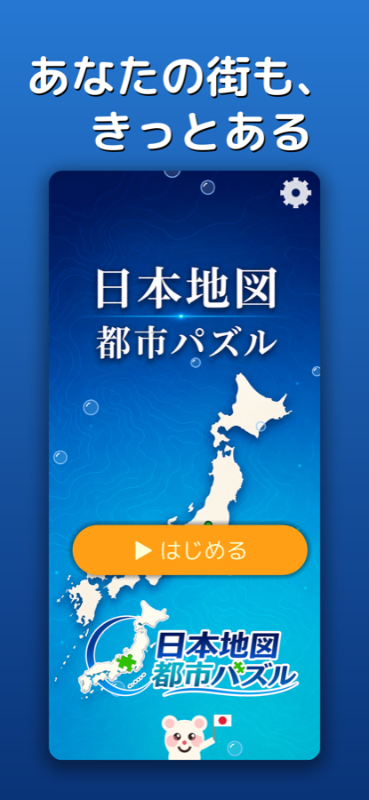
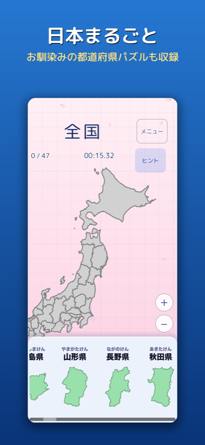
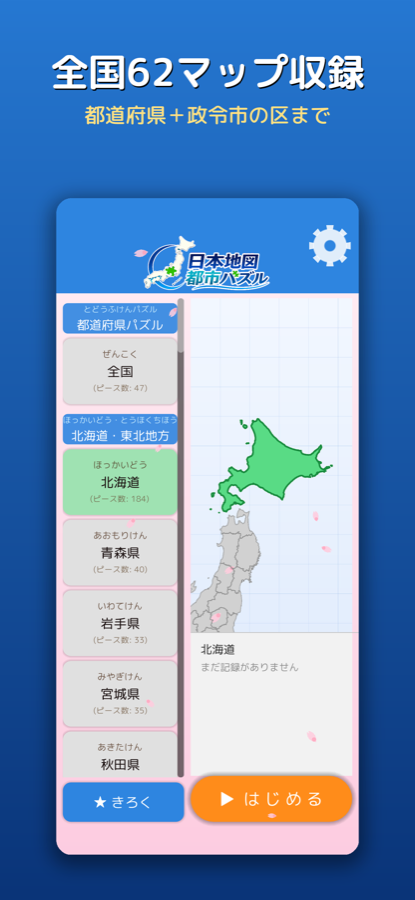
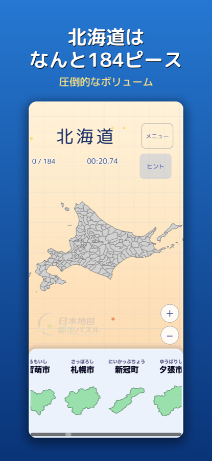
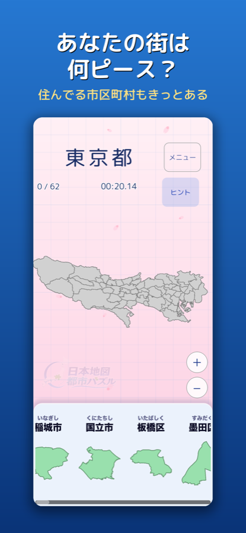
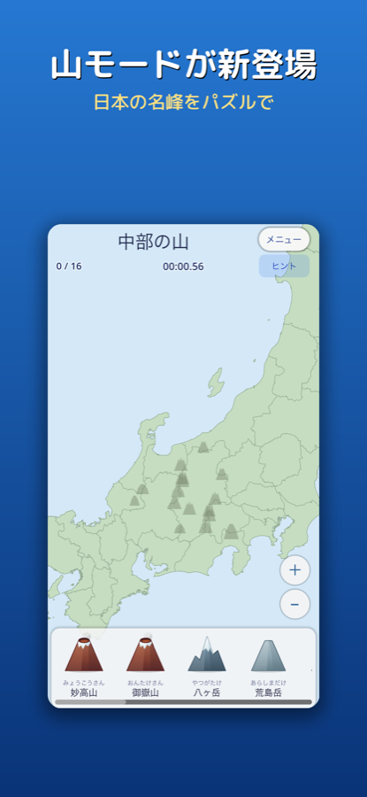
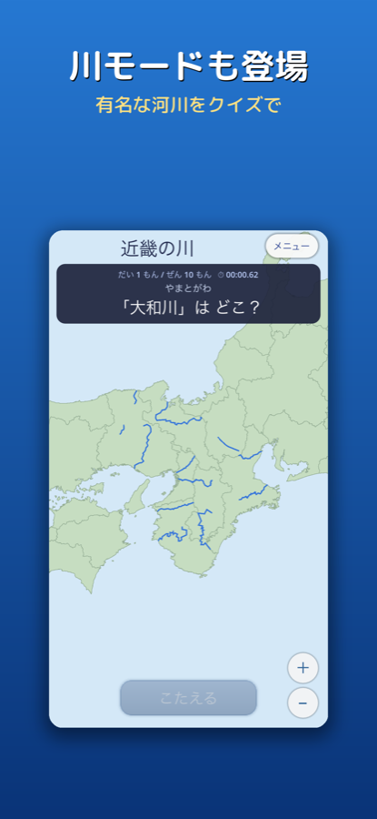

3つの遊び方
気分やレベルに合わせて、同じ地図を3通りに楽しめます。
🧩
パズル
ピースを正しい場所へ。完成めざしてタイムアタック。
❓
クイズ
「ここはどこ？」全10問。名前と場所が自然に身につく。
📖
スタディ
自分のペースで。タップで読み上げ＆豆知識も。
さらに3つのカテゴリで、遊びは9通りに広がる。
🗾都道府県
⛰️山
🌊川
全62マップ、ぜんぶ遊べる。
日本全国＋47都道府県＋政令指定都市の区。
市区町村まで、これだけのボリューム。


↑ 全62マップを並べたもの。山・川モードのマップはさらに別途収録。
充実の機能
遊びごたえも、学びやすさも。
- 政令指定都市の区まで
大都市は区の単位でこまかく遊べる。 - 山・川モード
日本の名峰・有名な河川もパズル/クイズ/スタディで。 - 圧倒的な作り込み
北海道はなんと184ピース。 - 記録とランキング
Game Centerで全国のプレイヤーとタイムを競える。 - クラウドで記録復元
機種変・再インストールでも進捗そのまま。 - スタディの豆知識
地名の読み・由来など、学びがふくらむ。
スクリーンショット
→ 横にスクロールできます







こんな方に
📚 小学生の地理学習に・中学受験対策に
👨👩👧 親子でいっしょに、クイズで盛り上がる
🗾 大人の学び直し・ご当地ファンにも
基本プレイ無料（広告あり）／買い切りで広告削除